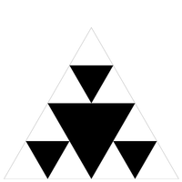
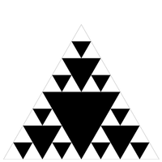

Recursieve graphics¶
Doel¶
Een bibliotheek van statische methodes schrijven die geometrische transformaties op veelhoeken (polygonen) uitvoert.
Een programma schrijven dat een Sierpinski driehoek tekent.
Een programma ontwerpen en ontwikkelen dat een recursief patroon van eigen ontwerp in beeld brengt (optioneel).
Voorbereiding¶
Download en unzip de project zip sierpinsky.zip, die de bestanden bevat die je nodig hebt voor deze opdracht.
Belangrijk
Je gaat in deze opgave gebruik maken van de klasse StdDraw uit de stdlib bibliotheek (deze bibliotheek is opgenomen in het projectbestand).
Bij het uitvoeren van jouw programma op de command line zal je Java moeten vertellen dat je gebruik maakt van deze bibliotheek en dat Java het moet opnemen in het classpath. Je zal om deze reden een extra argument bij de aanroep moeten meegeven, bijvoorbeeld voor het eerste deel van deze opgave
> java -cp lib/stdlib.jar Transform2D.java
Hetzelfde zal gelden voor het tweede deel van deze opgave waar je een programma Sierpinski.java gaat schrijven
> java -cp lib/stdlib.jar Sierpinski.java 4
Deel I - Een geometrische transformatie bibliotheek¶
Je zal een bibliotheek van statische methodes schrijven die verschillende geometrische transformaties uitvoert op veelhoeken. Wiskundig wordt een veelhoek gedefinieerd door de opeenvolging van hoekpunten \((x_0, y_0), (x_1, y_1), (x_2, y_2), \ldots\). In deze opgave representeren we een veelhoek door de x- en y-coördinaten van de hoekpunten op te slaan in twee parallelle arrays x[] en y[]. Bijvoorbeeld:

Fig. 12 StdDraw and polygon¶
// a polygon with these four vertices:
// (0, 0), (1, 0), (1, 2), (0, 1)
double x[] = { 0, 1, 1, 0 };
double y[] = { 0, 0, 2, 1 };
// Draw the polygon
StdDraw.polygon(x, y);
Transform2D.java¶
Schrijf een tweedimensionale transformatie bibliotheek Transform2D.java door de volgende methoden te implementeren:
public class Transform2D {
// Returns a new array object that is an exact copy of the given array.
// The given array is not mutated.
public static double[] copy(double[] array)
// Scales the polygon by the factor alpha.
public static void scale(double[] x, double[] y, double alpha)
// Translates the polygon by (dx, dy).
public static void translate(double[] x, double[] y, double dx, double dy)
// Rotates the polygon theta degrees counterclockwise, about the origin.
public static void rotate(double[] x, double[] y, double theta)
// Tests each of the methods by directly calling them.
public static void main(String[] args)
}
Requirements¶
De methoden verwachten dat de hoeken in graden zijn, maar Java’s goniometrische functies accepteren de argumenten in radialen. Gebruik
Math.toRadians()om van graden naar radialen te converteren.De transformatie methoden
scale(),translate(), enrotate()muteren de arrays, terwijlcopy()een nieuwe array teruggeeft.De hoofdmethode moet elke methode van de
Transform2Dbibliotheek testen. Met andere woorden, je moet elkeTransform2Dmethode aanroepen vanuitmain. Je moet experimenteren met verschillende gegevens, zodat je zeker weet dat je methoden correct zijn geïmplementeerd.Je kunt het volgende aannemen over de invoer: de arrays doorgegeven aan
scale(),translate(), enrotate()zijn nietnull, hebben dezelfde lengte, en bevatten niet de waardenNaN,Double.POSITIVE_INFINITY, ofDouble.NEGATIVE_INFINITY.De array die doorgegeven wordt aan
copy()is nietnull.De waarden voor de parameters
alpha,theta,dx, endyzijn nietNaN,Double.POSITIVE_INFINITY, ofDouble.NEGATIVE_INFINITY.
copy()¶
Kopieert de gegeven array in een nieuw array object. De gegeven array wordt niet gemuteerd.
De transformatie methoden (hieronder) muteren een gegeven veelhoek. Dit betekent dat de parallelle arrays die de veelhoek representeren worden veranderd door de transformatie methoden. Het is vaak nuttig om een kopie van de veelhoek op te slaan voordat een transformatie wordt toegepast.
Bijvoorbeeld:

Fig. 13 StdDraw polygon copy¶
public static void main(String[] args) {
// Set the x- and y-scale
StdDraw.setScale(-5.0, 5.0);
// Create original polygon
double[] x = { 0, 1, 1, 0 };
double[] y = { 0, 0, 2, 1 };
// Copy original polygon
double[] cx = copy(x);
double[] cy = copy(y);
// Rotate and translate the copy
rotate(cx, cy, -45.0);
translate(cx, cy, 1.0, 2.0);
// Draw the copy in blue
StdDraw.setPenColor(StdDraw.BLUE);
StdDraw.polygon(cx, cy);
// Draw the original polygon in red
StdDraw.setPenColor(StdDraw.RED);
StdDraw.polygon(x, y);
}
scale()¶
Schaalt de coördinaten van elk punt \((x_i, y_i)\) met een factor \(\alpha\).
\(x_i^\prime = \alpha x_i\)
\(y_i^\prime = \alpha y_i\)
Een voorbeeld van testcode voor scale() staat hieronder. We raden je echter aan om te experimenteren met verschillende waarden om te bevestigen dat de methoden werken zoals bedoeld.

Fig. 14 StdDraw scaled polygon¶
public static void main(String[] args) {
// Set the x- and y-scale
StdDraw.setScale(-5.0, +5.0);
// Create polygon
double[] x = { 0, 1, 1, 0 };
double[] y = { 0, 0, 2, 1 };
// Draw original polygon in red
StdDraw.setPenColor(StdDraw.RED);
StdDraw.polygon(x, y);
// Scale polygon by 2.0
scale(x, y, 2.0);
// Draw scaled polygon in blue
StdDraw.setPenColor(StdDraw.BLUE);
StdDraw.polygon(x, y);
}
translate()¶
De translatie van elk punt \((x_i, y_i)\) met een gegeven verschuiving \((d_x, d_y)\).
\( x_i^\prime = x_i + d_x\)
\( y_i^\prime = y_i + d_y\)
Een voorbeeld van testcode voor translate() staat hieronder. We raden je echter aan om te experimenteren met verschillende waarden om te bevestigen dat jouw methode werkt zoals bedoeld.

Fig. 15 StdDraw translated polygon¶
public static void main(String[] args) {
// Set the x- and y-scale
StdDraw.setScale(-5.0, +5.0);
// Create polygon
double[] x = { 0, 1, 1, 0 };
double[] y = { 0, 0, 2, 1 };
// Draw original polygon in red
StdDraw.setPenColor(StdDraw.RED);
StdDraw.polygon(x, y);
// Translate polygon by
// 2.0 in the x-direction
// 1.0 in the y-direction
translate(x, y, 2.0, 1.0);
// Draw translated polygon in blue
StdDraw.setPenColor(StdDraw.BLUE);
StdDraw.polygon(x, y);
}
rotate()¶
Roteert elk punt \((x_i, y_i)\) met \(\theta\) graden tegen de klok in rond de oorsprong.
\(x_i^\prime = x_i \cos \theta - y_i \sin \theta\)
\(y_i^\prime = y_i \cos \theta + x_i \sin \theta\)
Merk op dat in de vergelijkingen \(x_i^\prime\) en \(y_i^\prime\) afhangen van de \(x_i\) en \(y_i\), respectievelijk. In je implementatie kan je best een kopie maken van de \(x\) en \(y\) arrays voor je de \(x^\prime\) en \(y^\prime\) arrays berekent!
Een voorbeeld van testcode voor rotate() staat hieronder. We raden je echter ten zeerste aan om te experimenteren met verschillende waarden om te bevestigen dat je methodes werken zoals bedoeld.

Fig. 16 StdDraw rotated polygon¶
public static void main(String[] args) {
// Set the x- and y-scale
StdDraw.setScale(-5.0, +5.0);
// Create polygon
double[] x = { 0, 1, 1, 0 };
double[] y = { 0, 0, 2, 1 };
// Draw original polygon in red
StdDraw.setPenColor(StdDraw.RED);
StdDraw.polygon(x, y);
// Rotate polygon by 45 degrees ccw
rotate(x, y, 45.0);
// Draw rotated polygon in blue
StdDraw.setPenColor(StdDraw.BLUE);
StdDraw.polygon(x, y);
}
Een veelhoek hoeft zich niet op de oorsprong te bevinden om te kunnen roteren, je kan elke veelhoek om de oorsprong roteren met dezelfde methode. Bijvoorbeeld:

Fig. 17 StdDraw rotate and draw polygon at any point¶
public static void main(String[] args) {
// Set the x- and y-scale
StdDraw.setScale(-5.0, +5.0);
// Create polygon
double[] x = { 1, 2, 2, 1 };
double[] y = { 1, 1, 3, 2 };
// Draw original polygon in red
StdDraw.setPenColor(StdDraw.RED);
StdDraw.polygon(x, y);
// Rotate polygon by 90 degrees ccw
rotate(x, y, 90.0);
// Draw rotated polygon in blue
StdDraw.setPenColor(StdDraw.BLUE);
StdDraw.polygon(x, y);
}
Let op
Let op, alle figuren die je ziet hebben coördinaten-assen, maar je zult deze niet zien als je alleen de bijgeleverde code voor tests gebruikt. Je hoeft deze assen niet te tekenen.
Roteren rond een willekeurig punt.
Hoewel de rotatie code hierboven alleen polygonen rond de oorsprong zal roteren, kan je gemakkelijk om elk ander punt \((p_x, p_y)\) roteren met een eenvoudige techniek. Vertaal eerst de polygoon met \((-p_x, -p_y)\) zodat het rotatiepunt nu op de oorsprong ligt. Gebruik vervolgens de rotate() functie hierboven om te roteren rond de oorsprong. Tenslotte, verplaats de polygoon terug naar het rotatie punt door eenvoudig te transleren met \((p_x, p_y)\). Boem - drie regels code, en je bent klaar! Dit kan handig zijn als je polygonen tekent in je kunstproject hieronder.
main()¶
Test elke methode van de Transform2D bibliotheek door ze aan te roepen. Je moet experimenteren met verschillende waarden, zodat je er zeker van bent dat de methoden correct zijn geïmplementeerd. Voel je vrij om naar standard draw te tekenen met verschillende polygonen. Je moet geen command line argumenten te accepteren.
Deel II - Sierpinski driehoek¶
De Sierpinski driehoek is een voorbeeld van een fractaal patroon1.
Fig. 18 Sierpinski driehoek met diepte 0¶

Fig. 19 Sierpinski driehoek met diepte 1¶

Fig. 20 Sierpinski driehoek met diepte 2¶


Fig. 23 Sierpinski driehoek met diepte 5¶

Fig. 24 Sierpinski driehoek met diepte 6¶
De Poolse wiskundige Wacław Sierpiński beschreef het patroon in 1915, maar het komt al sinds de 13e eeuw voor in de Italiaanse kunst. Hoewel de Sierpinski driehoek er complex uitziet, kan het worden gegenereerd met een korte recursieve functie.
Jouw hoofdtaak is het schrijven van een recursieve functie sierpinski() die een Sierpinski driehoek van orde n naar standaard draw plot. Denk recursief: sierpinski() moet één gevulde gelijkzijdige driehoek tekenen (naar beneden gericht) en daarna zichzelf drie keer recursief aanroepen (met een passende stopconditie). Het moet 1 gevulde driehoek tekenen voor n = 1; 4 gevulde driehoeken voor n = 2; en 13 gevulde driehoeken voor n = 3; enzovoort.
Sierpinski.java¶
Pas een modulair ontwerp toe bij het schrijven van jouw programma, door het te organiseren in vier functies, zoals gespecificeerd in de volgende methoden:
public class Sierpinski {
// Height of an equilateral triangle with the specified side length.
public static double height(double length)
// Draws a filled equilateral triangle with the specified side length
// whose bottom vertex is (x, y).
public static void filledTriangle(double x, double y, double length)
// Draws a Sierpinski triangle of order n, such that the largest filled
// triangle has the specified side length and bottom vertex (x, y).
public static void sierpinski(int n, double x, double y, double length)
// Takes an integer command-line argument n;
// draws the outline of an upwards equilateral triangle of length 1
// whose bottom-left vertex is (0, 0) and bottom-right vertex is (1, 0);
// and draws a Sierpinski triangle of order n that fits inside the outline.
public static void main(String[] args)
}
De formule voor de hoogte van een gelijkzijdige driehoek met zijde \(s\) is \(h = s \times \frac{\sqrt{3}}{2}\).

Fig. 25 Height of an equilateral triangle of side length s¶
Hier is de indeling van de oorspronkelijke gelijkzijdige driehoek. Het bovenste punt ligt op \((\frac{1}{2}, \frac{\sqrt{3}}{2})\).
Fig. 26 Layout of the initial equilateral triangle¶
Hier is de indeling van een omgekeerde gelijkzijdige driehoek.

Fig. 27 Layout of an inverted equilateral triangle¶
Requirements¶
Om een gevulde gelijkzijdige driehoek te tekenen, moet je de methode
StdDraw.filledPolygon()aanroepen met de juiste argumenten.Om een ongevulde gelijkzijdige driehoek te tekenen, moet je de methode
StdDraw.polygon()met de juiste argumenten aanroepen.Je moet niet
StdDraw.save(),StdDraw.setCanvasSize(),StdDraw.setXscale(),StdDraw.setYscale(), ofStdDraw.setScale()aanroepen.Je mag alle kleuren gebruiken die je wilt om de omlijnde driehoek of de gevulde driehoeken te tekenen, mits het contrasteert met de witte achtergrond.
Mogelijke stappen¶
Dit zijn slechts suggesties voor hoe je gemakkelijk vooruitgang zou kunnen boeken. Je hoeft deze stappen niet te volgen. Merk op dat je uiteindelijke Sierpinski.java programma niet erg lang zal zijn
Schrijf een (niet recursieve) functie
height()die de lengte van de zijde van een gelijkzijdige driehoek als argument neemt en de hoogte teruggeeft. De body van deze methode moet een one-liner zijn.Test je
height()functie. Dit betekent dat je deheight()functie met verschillende waarden moet uitproberen. Geeft het de juiste berekening terug?
Teken in
main()de omtrek van de oorspronkelijke gelijkzijdige driehoek. Gebruik deheight()functie om de hoekpunten van de driehoek te berekenen.Schrijf een (niet recursieve) functie
filledTriangle()die drie (3) argumenten (x,y,length) accepteert en een gevulde gelijkzijdige driehoek tekent (met de punt naar beneden) met de opgegeven zijlengte en het onderste hoekpunt op (x, y).Om je functie te testen, schrijf je
main()zo datfilledTriangle()een paar keer wordt aangeroepen met verschillende argumenten. Je zult in staat zijn om deze functie zonder aanpassingen te gebruiken inSierpinski.java.
Uiteindelijk moet je een recursieve functie
sierpinski()schrijven die vier (4) argumenten (n,x,y,length) accepteert en een Sierpinski driehoek van orde n tekent, waarvan de grootste driehoek de opgegeven zijde lengte en onderste hoekpunt (x, y) heeft. Echter, gebruik een incrementele aanpak om deze functie te implementeren:Schrijf een recursieve functie
sierpinski()die één argumentnaccepteert, de waardenafdrukt, en zichzelf dan drie keer aanroept met de waarden - 1. De recursie moet stoppen alsn0 wordt.Om je functie te testen, schrijf je
main()zo dat het een integer command line argumentnaccepteert ensierpinski(n) aanroept. Je krijgt de volgende uitvoer als jesierpinski()aanroept metnvan 0 tot 5. Zorg ervoor dat je begrijpt hoe deze functie werkt, en waarom de getallen worden afgedrukt in de volgorde waarin dat gebeurt.> java -cp lib/stdlib.jar Sierpinski.java 0 [geen output]
> java -cp lib/stdlib.jar Sierpinski.java 1 1
> java -cp lib/stdlib.jar Sierpinski.java 2 2 1 1 1
> java -cp lib/stdlib.jar Sierpinski.java 3 3 2 1 1 1 2 1 1 1 2 1 1 1
> java -cp lib/stdlib.jar Sierpinski.java 4 4 3 2 1 1 1 2 1 1 1 2 1 1 1 3 2 1 1 1 2 1 1 1 2 1 1 1 3 2 1 1 1 2 1 1 1 2 1 1 1
> java -cp lib/stdlib.jar Sierpinski.java 5 5 4 3 2 1 1 1 2 1 1 1 2 1 1 1 3 2 1 1 1 2 1 1 1 2 1 1 1 3 2 1 1 1 2 1 1 1 2 1 1 1 4 3 2 1 1 1 2 1 1 1 2 1 1 1 3 2 1 1 1 2 1 1 1 2 1 1 1 3 2 1 1 1 2 1 1 1 2 1 1 1 4 3 2 1 1 1 2 1 1 1 2 1 1 1 3 2 1 1 1 2 1 1 1 2 1 1 1 3 2 1 1 1 2 1 1 1 2 1 1 1
Wijzig
sierpinski()zodat het niet alleennafdrukt, maar ook de lengte van de te plotten driehoek. Je functie moet nu twee argumenten hebben:nenlength. De eerste aanroep vanmain()moetsierpinski(n, 0.5)zijn, omdat de grootste Sierpinski driehoek zijde lengte 0.5 heeft. Elk opeenvolgend niveau van recursie halveert de lengte. Jouw functie zou de volgende output moeten geven:> java -cp lib/stdlib.jar Sierpinski.java 0 [geen output]
> java -cp lib/stdlib.jar Sierpinski.java 1 1 0.5
> java -cp lib/stdlib.jar Sierpinski.java 2 2 0.5 1 0.25 1 0.25 1 0.25
> java -cp lib/stdlib.jar Sierpinski.java 3 3 0.5 2 0.25 1 0.125 1 0.125 1 0.125 2 0.25 1 0.125 1 0.125 1 0.125 2 0.25 1 0.125 1 0.125 1 0.125
> java -cp lib/stdlib.jar Sierpinski.java 4 4 0.5 3 0.25 2 0.125 1 0.0625 1 0.0625 1 0.0625 2 0.125 1 0.0625 1 0.0625 1 0.0625 2 0.125 1 0.0625 1 0.0625 1 0.0625 3 0.25 2 0.125 1 0.0625 1 0.0625 1 0.0625 2 0.125 1 0.0625 1 0.0625 1 0.0625 2 0.125 1 0.0625 1 0.0625 1 0.0625 3 0.25 2 0.125 1 0.0625 1 0.0625 1 0.0625 2 0.125 1 0.0625 1 0.0625 1 0.0625 2 0.125 1 0.0625 1 0.0625 1 0.0625
Wijzig
sierpinski()zodat het vier (4) argumenten (n,x,y,length) accepteert en een Sierpinski driehoek van ordentekent, waarvan de grootste driehoek de opgegeven zijde lengte en onderste hoekpunt (x, y) heeft. Begin met het tekenen van Sierpinski driehoeken met potlood en papier. Welke waarden moeten er veranderen tussen elke recursieve aanroep?
Verwijder tot slot alle print statements als je klaar bent.
Hieronder staan de Sierpinski-driehoeken voor verschillende waarden van n.
Input |
Output |
|---|---|
|
|
|
 |
|
 |

Deel III - Maak jouw eigen kunstwerk¶
Dit is een optionele opgave.
Art.java¶
In dit deel ga je een programma Art.java maken dat een recursieve tekening maakt van je eigen ontwerp. In dit deel kan je jouw creativiteit alle ruimte geven, maar hier zijn wat hints voor het geval je niet zo artistiek bent.
Een zeer goede aanpak is om eerst een recursief patroon te kiezen als doel-output. Hier kan je een aantal inzendingen van studenten zien die een vergelijkbare cursus hebben gevolgd. Zie ook de Famous Fractals in Fractals Unleashed voor enkele ideeën. Hier is een lijst van fractals, per Hausdorff dimensie. Sommige plaatjes zijn moeilijker te genereren dan andere (en sommige vereisen trigonometrie).
Requirements¶
Art.javamoet één (1) geheel command-line argumentnaccepteren dat de diepte van de recursie bepaalt.Jouw tekening moet binnen het tekenvenster blijven als
ntussen 1 en 6 inclusief is.Je mag de grootte van het tekenvenster niet veranderen (maar je mag wel de schaal veranderen). Voeg geen geluid toe.
Je tekening kan een geometrisch patroon zijn, een willekeurige constructie, of iets anders dat gebruik maakt van recursieve functies.
Optioneel mag je de
Transform2Dbibliotheek gebruiken die je in deel 1 hebt geïmplementeerd. Je kunt ook extra geometrische transformaties definiëren inArt.java, zoals lijnvermenigvuldiging, spiegeling over de x- of y-as, of roteren om een willekeurig punt (in tegenstelling tot de oorsprong).
Achtergrond¶
Fractals in het wild. Hier is een Sierpinski driehoek in klei, een Sierpinski koekje, een fractal pizza, en een Sierpinski hamantaschen.
Copyright © 1999–2021, Robert Sedgewick en Kevin Wayne.
- 1
De Poolse wiskundige Wacław Sierpiński beschreef het patroon in 1915, maar het komt al sinds de 13e eeuw voor in de Italiaanse kunst. Hoewel de Sierpinski driehoek er complex uitziet, kan hij worden gegenereerd met een korte recursieve functie.